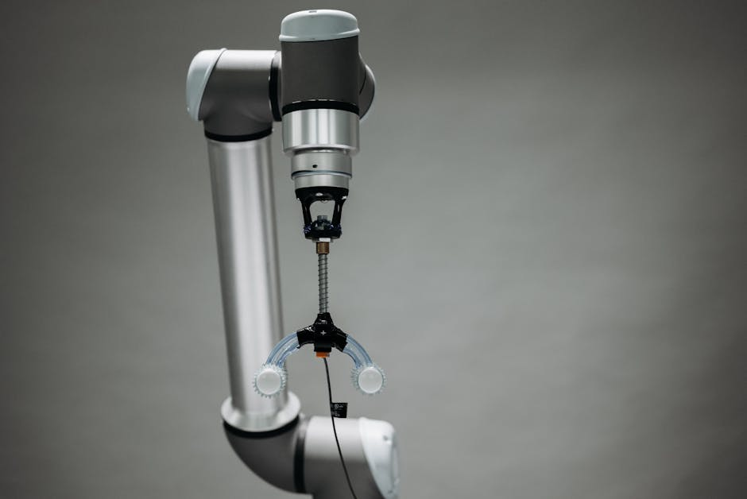

Imagine a world where robots aren't just rigid, metallic machines, but can bend, twist, and squeeze through tight spaces like an octopus, or gently grasp a delicate flower without crushing it. Sounds like science fiction, right? Well, welcome to the fascinating realm of Soft Robotics! At MakerWorks, we believe in exploring the cutting edge of technology, and soft robots are undoubtedly one of the most exciting frontiers in the field, promising a future where robots are not just powerful, but also flexible, adaptable, and incredibly gentle.
What Exactly Are Soft Robots?
Unlike the traditional robots you might see in factories – made of stiff metals and plastics with gears and motors – soft robots are constructed primarily from highly compliant, flexible materials like silicone, rubber, and various fabrics. Think of them as the "squishy" cousins in the robotics family. Their bodies are designed to deform and change shape continuously, much like living organisms.
This fundamental difference allows them to interact with the world in ways rigid robots simply cannot. Where a traditional robot might struggle to pick up an irregularly shaped object or navigate a cluttered environment, a soft robot can adapt its form, making it incredibly versatile.
Why the "Soft" Revolution? The Advantages of Flexibility
The shift towards soft materials isn't just about making robots look cool; it offers significant advantages that are driving this new wave of innovation:
- Enhanced Safety: Soft robots are inherently safer for human interaction. If a rigid robot accidentally bumps into a person, it could cause injury. A soft robot, however, is designed to yield and absorb impact, making them ideal for collaborative tasks alongside humans (often called "co-bots").
- Unmatched Adaptability: Imagine a robot needing to grasp objects of varying shapes and sizes. A soft gripper can conform to the object's geometry, providing a secure yet gentle hold, unlike rigid grippers that need precise alignment.
- Increased Resilience: Soft robots are more resistant to damage from collisions or falls. Their flexible bodies can absorb energy, making them more robust in unpredictable environments.
- Bio-inspiration: Nature is full of incredible soft structures – an octopus's arm, an elephant's trunk, a caterpillar's body. Soft robotics draws immense inspiration from these biological marvels, aiming to replicate their dexterity and adaptability.
- Navigation in Complex Environments: Their ability to deform allows them to squeeze through narrow gaps or move over uneven terrain where rigid robots would get stuck.
“The elegance of soft robotics lies in its ability to mimic nature's most effective designs, offering solutions that are both powerful and inherently safe.”
How Do Soft Robots Work? The Magic Behind the Flex
The secret to a soft robot's movement lies in its flexible actuators. These are the components that enable the robot to change shape. Here are some common methods:
Pneumatic Actuators: Air Power!
One of the most common and accessible ways to make soft robots move is using pneumatics. This involves inflating internal chambers or channels within the robot's soft body with air pressure. As air enters these chambers, the robot's structure deforms in a predictable way. Think of blowing air into a balloon – it expands! Soft robot actuators, often called "PneuNets" (Pneumatic Networks), are designed with specific geometries so that when inflated, they bend, extend, or twist.
Example: A simple soft gripper might have several finger-like structures. When air is pumped into them, they curl inwards, allowing the gripper to grasp an object.
Hydraulic Actuators: Liquid Muscle
Similar to pneumatic systems, hydraulic actuators use incompressible liquids (like water or oil) instead of air. This often allows for greater force generation and more precise control, but can also make the systems heavier and more complex.
Smart Materials: Responding to Stimuli
Some advanced soft robots utilize "smart materials" that can change shape or properties in response to external stimuli like electricity, heat, or light. Examples include:
- Shape Memory Alloys (SMAs): Metals that "remember" an original shape and return to it when heated.
- Electroactive Polymers (EAPs): Plastics that change shape when an electric voltage is applied across them. These are often called "artificial muscles."
Materials of Choice
The primary materials used in soft robotics are various types of elastomers, such as:
- Silicone: Highly flexible, durable, and biocompatible (safe for contact with living tissue).
- Rubber: Natural or synthetic, offering good elasticity.
- Fabric: Used for creating flexible skins or constraining inflation for specific movements.
Bio-inspiration: Learning from Nature's Engineers
Many of the most innovative soft robot designs are directly inspired by the natural world. Here are a few examples:
- Octopus: Its arms are a marvel of soft robotics, capable of infinite degrees of freedom, allowing for complex manipulation and locomotion without any rigid joints.
- Elephant Trunk: Combines strength and dexterity, capable of lifting heavy objects while also performing delicate tasks.
- Caterpillars and Worms: Their undulating movements inspire soft robots designed for locomotion in confined or unstructured environments.
- Fish: The way fish swim using their flexible bodies and fins provides insights for underwater soft robots.
Applications of Soft Robotics: Impacting India and Beyond
The potential applications for soft robots are vast and growing, with significant relevance for a country like India:
- Healthcare:
- Minimally Invasive Surgery: Soft surgical tools can navigate complex anatomical pathways with less risk to patients.
- Rehabilitation: Soft exoskeletons and assistive devices can help patients regain mobility or support elderly individuals with gentle, adaptive assistance.
- Wearable Robotics: Soft grippers for prosthetics that can delicately hold objects.
- Manufacturing & Logistics:
- Delicate Handling: Picking and placing fragile items like fruits, vegetables, or electronic components without damage.
- Human-Robot Collaboration: Soft robots can work side-by-side with human workers in factories, improving efficiency and safety.
- Exploration & Disaster Response:
- Search and Rescue: Snake-like soft robots can navigate through rubble and debris to find survivors in disaster zones.
- Environmental Monitoring: Soft robots can explore delicate ecosystems or dangerous industrial sites.
- Underwater Exploration: Bio-inspired soft robots can move efficiently through water, exploring oceans without disturbing marine life.
- Agriculture:
- Automated Harvesting: Soft grippers can pick ripe fruits and vegetables gently, reducing spoilage and labor costs.
- Soil Sampling: Soft robots can navigate fields for precise data collection.
Challenges and the Road Ahead
While incredibly promising, soft robotics still faces challenges:
- Control Complexity: Precisely controlling the infinite degrees of freedom in a soft body is much harder than controlling rigid joints.
- Durability: Soft materials can be susceptible to punctures or tears, though advancements are being made.
- Sensing: Integrating sensors into flexible structures without compromising their compliance is tricky.
- Power and Speed: Many soft robots are currently slower and generate less force than their rigid counterparts.
Researchers are actively working on these challenges, developing new materials, advanced control algorithms (often using AI and machine learning), and innovative fabrication techniques.
Getting Started with Soft Robotics: Your First Flexible Steps!
The best part about soft robotics is how accessible it can be for beginners! You don't need a high-tech lab to start experimenting. Here's how you can dive in:
- DIY Materials: Start with everyday items! Balloons, syringes, silicone sealant, plastic tubing, and small air pumps (like those used for aquariums) can be used to create simple pneumatic actuators.
- Simple Grippers: Try making a basic soft gripper by molding silicone or using balloons and tubing.
- Basic Control: You can control air pumps using microcontrollers like Arduino, which adds a layer of programming to your soft robot.
Here's a very simple Arduino sketch that could control a small air pump (via a relay) to inflate a soft actuator when a button is pressed:
// Simple Arduino example for controlling a small air pump for a soft robot
// This code assumes you have a relay connected to control the pump's power
// and a button to trigger it.
const int pumpRelayPin = 7; // Digital pin connected to the relay's IN pin
const int buttonPin = 2; // Digital pin connected to a button
void setup() {
pinMode(pumpRelayPin, OUTPUT); // Set the relay pin as an output
pinMode(buttonPin, INPUT_PULLUP); // Set button pin as input with internal pull-up resistor
Serial.begin(9600); // Start serial communication for debugging
digitalWrite(pumpRelayPin, HIGH); // Ensure pump is OFF initially (HIGH for active-LOW relays)
Serial.println("Soft Robot Pump Controller Ready!");
}
void loop() {
// Check if the button is pressed (LOW because of INPUT_PULLUP)
if (digitalRead(buttonPin) == LOW) {
Serial.println("Button pressed! Activating pump...");
digitalWrite(pumpRelayPin, LOW); // Turn pump ON (LOW for active-LOW relays is common)
delay(2000); // Keep pump on for 2 seconds (adjust as needed)
digitalWrite(pumpRelayPin, HIGH); // Turn pump OFF
Serial.println("Pump deactivated.");
delay(500); // Small delay to debounce button and prevent rapid re-triggering
}
}
This code demonstrates how a simple electronic input (a button press) can trigger a mechanical action (turning on an air pump) to actuate your soft robot. You can expand on this by adding more sensors (like pressure sensors) or more complex sequences.
The Future is Flexible!
Soft robotics is a rapidly evolving field, promising a future where robots are not just tools, but more integrated, adaptable, and intuitive partners in our daily lives. From aiding in complex surgeries to gently harvesting crops, the potential is boundless. As we continue to learn from nature and innovate with new materials and control systems, soft robots will undoubtedly play a crucial role in shaping the next generation of automation.
Are you excited about the world of soft robots? We certainly are! We encourage you to explore, experiment, and perhaps even build your own flexible creations. Dive into resources, watch videos, and let your imagination flow. Who knows, the next big breakthrough in soft robotics might come from one of you, right here in India!
Join us at MakerWorks to explore these fascinating technologies and turn your ideas into reality. Let's make the future flexible, together!